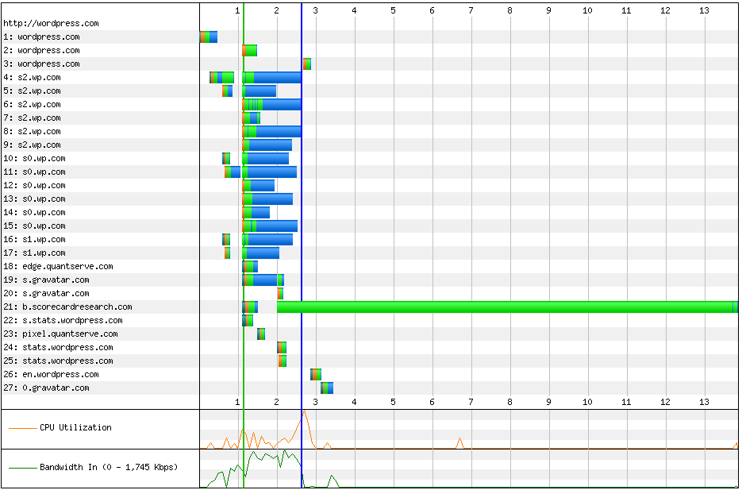
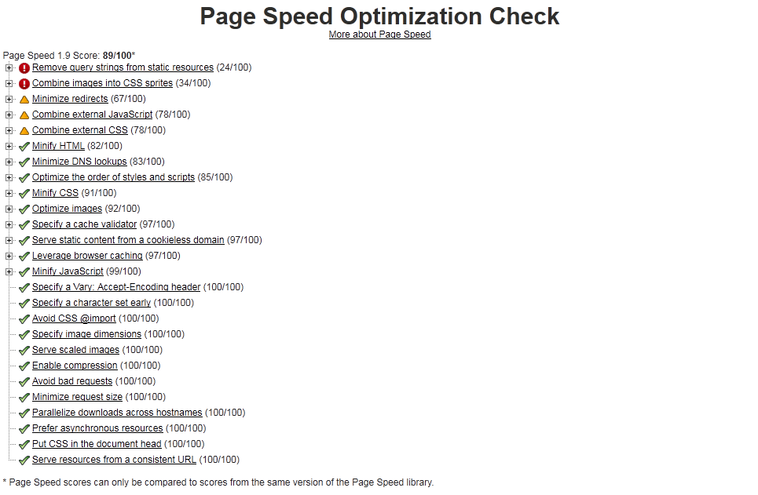
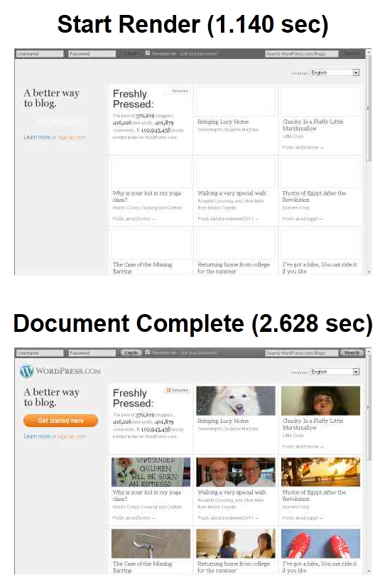

Configuring HttpArchive + Webpagetest (Part 1: Introduction)
Testing is an integral part of developing code, and this is usually a lesson that is learned the hard way. I can’t name all the times that I’ve made a trivial mistake that goes unnoticed until the code has ballooned to the point where rooting around and figuring it out is an impossibility.
For even the best tester, it’s a rare occurrence that every single possible exception is captured the first time around. On top of this, certain kinds of tests are also less frequently even considered. Among these are performance tests for web developers.
Figuring out how quickly each part of a website responds is not an easy task, and is not a concern for must until it goes wrong. Luckily, there exists a pair of tools that provide a great look at these performance issues: HttpArchive and Webpagetest.
Webpagetest #
Webpagetest is a tool for testing website performance. Originally a piece of in-house AOL software, the site is now available as both a public website, and open-source for users to download. It is an amazing tool that provides various tools that measure website performance, from a waterfall chart (of both resources accessed and connections):

to Google’s Pagespeed app (gives a rating out of 100 for page performance):

to actual screenshots of the page:

I would give it a shot on your own site to see how amazing of a product it really is. It is a comprehensive at look at a site, and a timeline for the time it takes to load, start to finish. Webpagetest by itself is a great tool for debugging a slow site, but there is another level with which one can examine the performance of a site: over time. If one could take the information from Webpagetest, store it in a database of some kind, and analyze the results, there would be another dimension through which one can analyze where the site was, how it is now, and predict the direction, performance wise, it is heading.
Well, that is exactly what HttpArchive is built to do!
HttpArchive #
HttpArchive is another open-source project, meant to be similar to archive.org, which snapshots various sites on the internet, providing a look back into the past. HttpArchive archives the performance of various websites, providing a different look back: at site performance.Using Webpagetest as a backbone, HttpArchive saves snapshots of information from webpagetest.org, and analyzes trends in various websites. For example, take a look at it’s analysis of wordpress.com:
http://httparchive.org/viewsite.php?pageid=268424
The site is able to give insight that is interesting to both developers and users alike!
Conclusion #
The goal of this tutorial is to go over how to implement a private instance of Webpagetest and HttpArchive, and how to link the pair together. This will create a powerful and useful performance testing suite.
Stay tuned for part 2, where we’ll go over installing and configuring Webpagetest!
Part3: going over installing HttpArchive.
Part4: putting them together and conclusion.